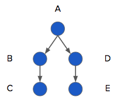

### Managing Research Software Projects # Automation --- # What problems are we trying to solve? - Reproducibility - "How did I produce Figure 3?" - Transferability - "How did they produce Figure 3?" - Efficiency - "…and then you type this, and then you type that…" --- # Make and its children - Make was created in 1975 by a summer intern to recompile C programs - "If these files are out of date, re-create them" - Dozens of imitators, but none have achieved critical mass - Use drake for R - Use snakemake for Python --- # Dependencies - A depends on B - B depends on C - So if C changes: - Re-create B - Then re-create A - Don't re-create D unless E changes  --- # Rules - A depends on all B's - Each B<sub>i</sub> depends on a C<sub>i</sub> - So if some C<sub>i</sub> change: - Re-create those B<sub>i</sub> - Then re-create A - Write one rule for C<sub>i</sub> → B<sub>i</sub> - Just like you would write a function <img src="img/dependencies-rules.png" alt="Dependencies with Rules" /> --- # Automation and notebooks - Notebooks designed for interactive operation - Linear sequence of steps, short execution times - Build managers designed for batch operation - Complex interactions, possibly long execution times - Use notebooks as steps in a build - Don't yet have good tools to express complex dependencies in notebooks --- <h1 class="project-lead">As project lead</h1> - Make sure all repeated actions are in the build file - Make sure they are documented in the build file - Because otherwise the docs will fall out of date - Teach newcomers how to use the build system - Probably new to most of them - Decide what should be in notebooks vs. packages --- # Continuous integration 1. Contributor pushes to repository 1. GitHub notices a CI configuration file 1. Creates a fresh virtual machine 1. Clones a fresh copy of repository 1. Runs tests, creates website, etc. 1. Reports results 1. …all while you're making tea --- # Because - Never forgets to do it - Never forgets to tell people what it did - Never forgets what it did - Can do things on operating systems or software versions that individual developers don't have - Documents the workflow - A checklist that is constantly checked --- <h1 class="project-lead">As project lead</h1> - Same advice as the build system - Manage infrastructure - Teach people how to use it - Make sure they do - Recalibrate your productivty measures --- <h1 class="exercise">What do you do now?</h1> 1. What tasks do you repeat most often on your project? 1. What does a newcomer have to set up in order to do these things? 1. Where is this documented? --- <h1 class="exercise">What alternatives should you consider?</h1> 1. What is the biggest difference between GitHub Actions and a service like Travis-CI? 1. Which would be a better choice for your project? Why?